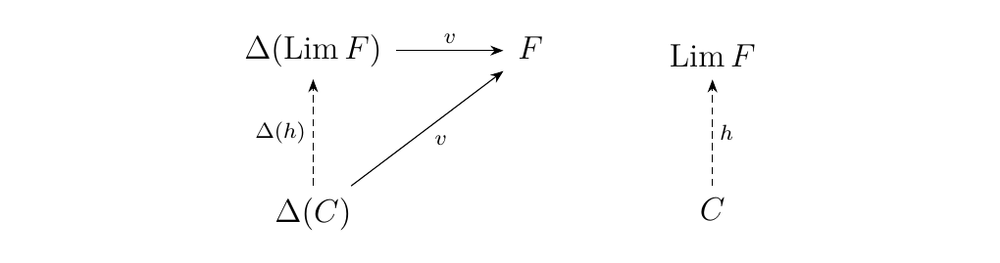
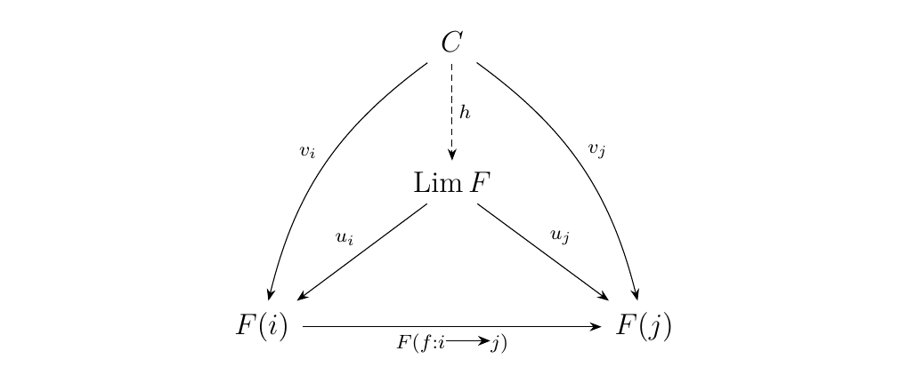
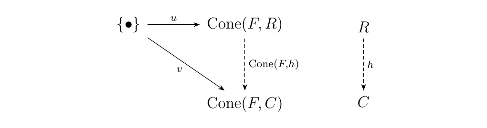
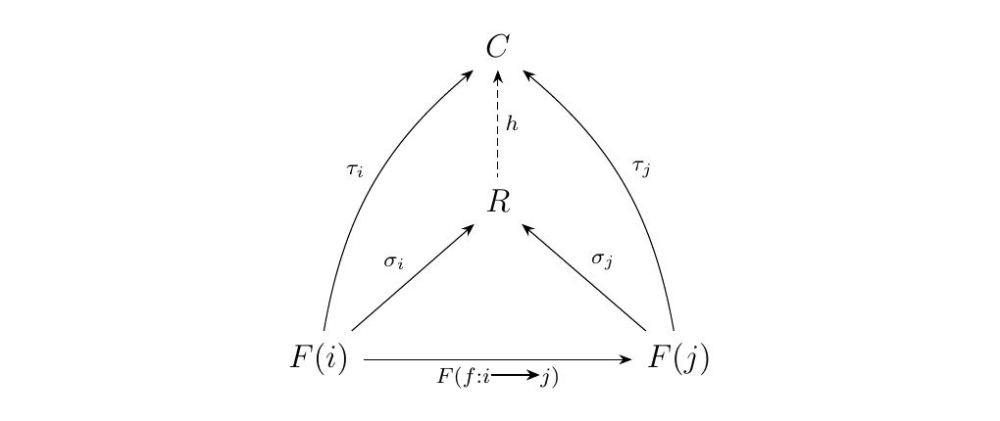

3.6. Introduction to Limits and Colimits
In our previous work, we learned a lot about universal morphisms and then studied the basics of how products and coproducts behave in categories. Such studying provides a great deal of preparation for the concepts of limits and colimits, which we will introduce in this section. Before we do so, it will be convenient to utilize the notion of a cone.
Let \(\cc\) be a category, \(A\) an object of \(\cc\). Let \(F: J \to \cc\) be a functor, \(J\) an arbitrary category. A cone with \(A\) over \(F\) is a family of morphisms
such that, for each morphism \(f: i \to j\) in \(J\), the diagram below commutes.
We denote the set of cones over \(F\) with apex \(A\) as \(\text{Cone}(A, F)\).
Dually, a cone with \(F\) over \(A\) is a family of morphisms
such that, for each morphism \(f: i \to j\) in \(J\), the diagram below commutes.
Similarly, we define the set of cones with \(F\) over \(A\) as \(\text{Cone}(F, A)\).
We will see that the above concept is similar to the work we have done so far. To demonstrate this, we generalize our concept of a diagonal functor.
Let \(\cc\) and \(J\) be categories. The diagonal functor on \(J\) is the functor \(\Delta: \cc \to \text{Fun}(J, \cc)\) which sends an object \(C\) to the functor \(\Delta(C): J \to \cc\), defined as follows: Each \(i \in J\) is mapped to \(C\), and every morphism in \(J\) is mapped to the identity of \(\cc\).
Note how if we set \(J = \dd_n\), the discrete category on \(n\)-object, or \(J = \dd_{\lambda}\), the discrete category with objects indexed by \(\lambda\), we obtain our original definitions of the diagonal functor.
Let \(\cc\) and \(J\) be categories. Suppose \(F: J \to \cc\) is a functor, and let \(A\) be an object of \(\cc\).
- A cone with \(A\) over \(F\) corresponds to a natural transformation \(\phi: \Delta(A) \to F\), and vice versa. In other words,
$$ \text{Cone}(A, F) \cong \nat(\Delta(A), F). $$ * A cone with \(F\) over \(A\) corresponds to a natural transformation \(\phi: F \to \Delta(A)\), and vice versa. In other words,
The proof is left to the reader. The proposition is the key to mentally switching back and forth from thinking about cones and natural transformations (between suitable functors) as equivalent constructions.
We now define limits and colimits.
[Limits] Let \(F: J \to \cc\) be a functor. The limit of \(F\) is an object \(\Lim F\) equipped with a natural transformation \(u: \Delta(\Lim F) \to F\) such that \begin{center} \((\Lim F, u: \Delta(\Lim F) \to F)\) is universal from \hyperref[definition:universal_morphism_from_F_to_D]{\textcolor{blue}{\(\Delta\) to \(\Lim F\)}}. \end{center} * This means that, for any other pair \((C, v: \Delta(C) \to F)\) with \(v\) a natural transformation and with \(C \in \cc\), there exists a unique morphism \(h: C \to \Lim F\) in \(\cc\) such that the diagram below commutes.
 * By Proposition \ref{proposition:cones_are_natural_transformations}, the morphism \(u: \Delta(\Lim F) \to F\) forms a cone with \(\Lim F\) over \(F\) via a family of morphisms \(u_i: \Lim F \to F(i)\) for all \(i \in J\).
Similarly, any other pair \((C, v: \Delta(C) \to F)\) is also a cone with \(C\) over \(F\) via a family of morphisms \(v_i: C \to F(i)\) with \(i \in J\).
Thus, the universal property, states that there exists a unique \(h: C \to \Lim F\) such that the diagram below commutes.

We remind the reader that limits do not always exist for certain functors. This is because universal objects do not always exist. We will eventually discuss conditions for existence of limits.
Next, we offer the definition of a limit.
[Colimits] Let \(F: J \to \cc\) be a functor. The colimit of \(F\) is an object \(\Colim F\) equipped with a natural transformation \(u: F \to \Delta(\Colim F)\) such that \begin{center} \((\Colim F, u: F \to \Delta(\Colim F))\) is universal from \hyperref[definition:universal_morphism_from_D_to_F]{\textcolor{blue}{\(F\) to \(\Delta\)}}. \end{center}
Now is a good time to use Proposition \ref{proposition:cones_are_natural_transformations} and reinterpret the definition of a colimit as a family of morphisms like we did in the definition of a limit.
We comment on the notation of a limit.
- Many people denote the limit of a functor as \(\Limfrom F\).
- Many people denote the colimit of a functor as \(\Limto F\).
The notation makes only sense if one understand the connection between limits and colimits and
universal morphisms. (Compare the direction of the arrow \(h\) in the universal diagrams).
However, this then sometimes leads people to start writing \(\Colimto F\) and \(\Colimfrom F\). The issue with this notation is that it seems unnecessarily complicated (perhaps I am wrong, but I have waited for a long time to come upon an instance for when it could be useful). Despite these observations, this notation is very consistently used in texts which use categorical tools, and so this warrants a comment to the reader.
Moving forward, I will simply write \(\Lim F\) and \(\Colim F\), since I see no need to make the notation anymore complicated than it needs to be.
Let \(J = \dd_n\), the discrete category with \(n\)-objects. Let \(F: J \to \cc\) be the functor where \(F(\bullet_i) = A_i\). We then have that
- The product \(\prod_{i = 1}^{n}A_i\) is the limit of \(F\).
- The coproduct \(\coprod_{i = 1}^{n}A_i\) is the colimit of \(F\).
When we set \(J = \dd_{\lambda}\), with \(\lambda\) an arbitrary indexing set, we similarly get that the arbitrary product and coproduct definitions are simply instances of limits and colimits.
Thus, universal diagrams and limits have been right in our faces for the last three sections.
Since limits and colimits are universal objects, we have the following proposition. This is a genearlization of Proposition \ref{proposition:product_coproduct_natural_bijection}.
Let \(F: J \to \cc\) be a functor.
- If \(\Lim F\) exists, then for each object \(C\) of \(\cc\), we have the natural bijection
$$ \hom_{\cc}(C, \Lim F) \cong \text{Cone}(C, F) $$ * If \(\Colim F\) exists, then for each object \(C\) of \(\cc\), we have the natural bijection
We prove the first result. Since \(\Lim F\) exists, let \((\Lim F, u: \Delta(\Lim F) \to F)\) be universal from \(\Delta\) to \(F\). Then by Exercise \hyperref[exercise:universality_bijection]{3.2.1}, we have the natural bijection
By Proposition \ref{proposition:cones_are_natural_transformations}, we can rewrite this natural bijection as
This proves the first result; the second follows similarly.
The above proposition is very useful as it gives us the following proposition, which is our first test of whether or not a limit or colimit exists in a category.
Let \(F: J \to \cc\) be a functor. Then we may define the functors
We have the following two results.
- \(\cone(-, F)\) is representable if and only if \(\Lim F\) exists in \(\cc\) (in which case, this is the representing object)
- \(\cone(F, -)\) is representable if and only if \(\Colim F\) exist in \(\cc\) (in which case, this is the representing object)
For pedagogical reasons, we prove the second bullet point and leave the first as an exercise.
One direction is immediate: If \(\Colim F\) exists, then by Proposition \ref{proposition:limit_cone_set_natural_bijection}, we obtain a natural bijection for each \(C\) in \(\cc\) which implies that \(\cone(F, -)\) is representable.
Conversely, suppose \(\cone(F, -)\) is a representable functor with representing object \(R\). We want to show \(R = \Lim F\). Now by Proposition \ref{proposition:representable_if_and_only_if}, \(\cone(F, -)\) is representable if and only if \((R, u: \{\bullet\} \to \cone(F, R))\) is universal from \(\{\bullet\}\) to \(\cone(F, -)\).
Let us shut off our brains and blindly expand what this means. This means that for any other pair \((C, v: \{\bullet\} \to \cone(F, C))\), there exists a unique \(h: R \to C\) such that diagram below commutes.

Now let us turn our brains back on and understand what this means. A function \(u: \{\bullet\} \to \cone(F, R)\) simply picks out some cone \(\sigma \in \cone(F, R)\) whose family we denote as \(\sigma_i: F(i) \to R\).
Similarly, \(v: \{\bullet\} \to \cone(F, C)\) picks out a cone \(v(\{\bullet\})\), which we may denote as \(\tau\). What the universal property then says is the following: Given any cone \(\tau\) with \(F\) over some object \(C\), there exists a unique \(h\) such that the diagram below commutes.
 This then means that \(R = \Colim F\), which proves this direction.
The above theorem is actually quite remarkable. We have linked the existence of our limit to the representability of a particular functor (one which we understand fairly well). This tells us the concept of a cone is very intimately linked to that of a limit and colimit.
{\large Exercises \vspace{0.5cm}}
- *1.* Let \(F, G: J \to \cc\) be two functors, and suppose \(F \cong G\) (i.e., there is a
natural isomorphism between them).
Show that
- (i.) If \(\Lim F\) exists, then \(\Lim G\) exists and \(\Lim F \cong \Lim G\).
- (ii.) If \(\Colim F\) exists, then \(\Colim G\) exists and \(\Colim F \cong \Colim G\).
- *2.* Prove Proposition \ref{proposition:cones_are_natural_transformations}.
- *3.* Expand Definition \ref{definition:colimit_of_a_functor}, the definition of a colimit, in a similar fashion to how we expanded Definition \ref{definition:limit_of_a_functor}, the definition of a limit.
- *4.* Use Proposition \ref{proposition:cones_are_natural_transformations} and Proposition \ref{proposition:universality_bijection} to show that if \(\Colim F\) exists for a functor \(F: J \to \cc\), then we have a natural bijection
This then completes the proof of Proposition \ref{proposition:limit_cone_set_natural_bijection}. * *5. Use Proposition \ref{proposition:limit_cone_set_natural_bijection} (the proof of which you just completed) to prove the first bullet point of Proposition \ref{proposition:representable_if_and_only_if}: The functor \(\cone(-, F): \cc \to **Set**\) is representable if and only if \(\Lim F\) exists. Use the following steps. * (i.)* Let \(\cc\) be a category, \(F: J \to \cc\) a functor. Recall that we may define the functor
$$
\overline{F}: J \to \cc\op
$$
which acts the same as $F$ on objects, but
if $f: i \to j$ is a morphism in $J$, then $\overline{F}(f) = F(f)\op$.
Show that $\Lim F$ exists in $\cc$ if and only if
$\Colim \overline{F}$ exists in $\cc\op$.
* ***ii*.** Show that
$$
\cone(-, F) \cong \cone(\overline{F}, -).
$$
Then use (*i*) and the second bullet point of
Proposition \ref{proposition:representable_if_and_only_if}
to complete the proof.